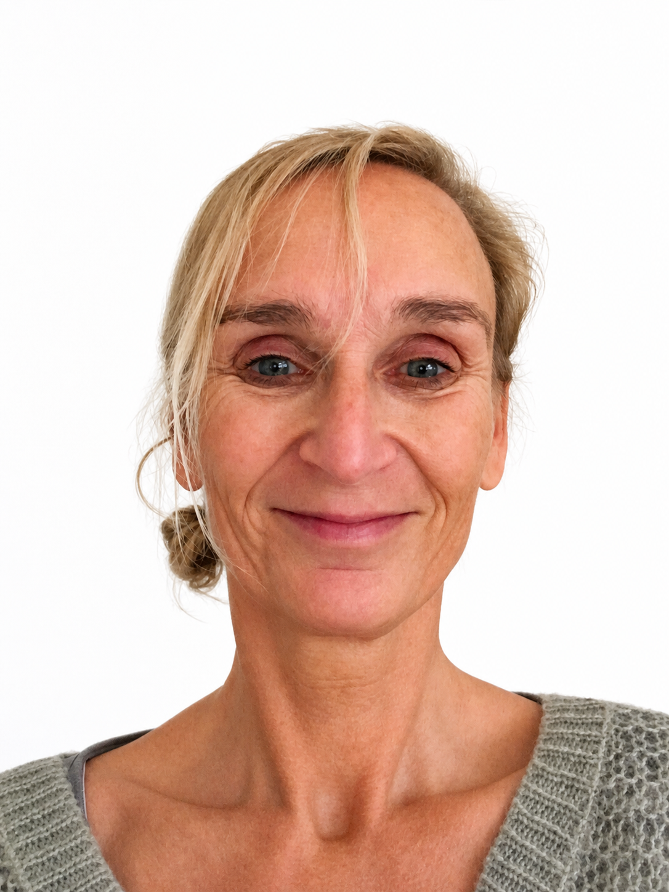

Jeg er specialpsykolog i psykiatri med mange års erfaring i at arbejde med mennesker med komplekse psykiske og psykiatriske problemstillinger.
Jeg har arbejdet med en bred vifte af udfordringer, herunder angst, depression, traumer, stress, krisereaktioner og afhængighed. Jeg har også stor erfaring med mennesker, hvor der er tale om både psykisk lidelse og samtidig rusmiddelproblematik.
Mit arbejde omfatter både psykoterapi og psykologisk udredning. Jeg har blandt andet erfaring med diagnostisk udredning og 2nd opinion samt psykologiske undersøgelser i forhold til pædagogiske og arbejdsmarkedsrettede indsatser.
Jeg har gennem mange år arbejdet inden for dobbeltdiagnoseområdet og har været involveret i både behandling, undervisning og udviklingsprojekter. Jeg har blandt andet undervist i gruppeforløb og været med til at udvikle og implementere indsatser i samarbejde med kommuner og regioner.
Jeg lægger vægt på et trygt og respektfuldt samarbejde, hvor der er plads til både faglighed og menneskelighed. Mit fokus er at skabe et rum, hvor der kan arbejdes med forandring i et tempo, der giver mening for den enkelte.
Jeg er uddannet fra Aarhus Universitet i 2006 og er specialpsykolog i voksenpsykiatri. Derudover er jeg specialist i psykoterapi og psykopatologi samt supervisor i psykopatologi.
Jeg har en master i offentlig administration (MPA) fra Aalborg Universitet, hvor jeg har haft fokus på samarbejde på tværs af faggrupper og organisationer i sundhedsvæsenet.
Jeg har efteruddannelse inden for blandt andet kognitiv adfærdsterapi, psykodynamisk terapi, narrativ traumeterapi, tegneterapi og EMDR.
Jeg har desuden været aktiv inden for dobbeltdiagnoseområdet (samtidig psykisk lidelse og rusmiddelproblematik), hvor jeg har deltaget i udvikling af faglige indsatser og netværk.
Læs mere her: dobbeltdiagnose.net